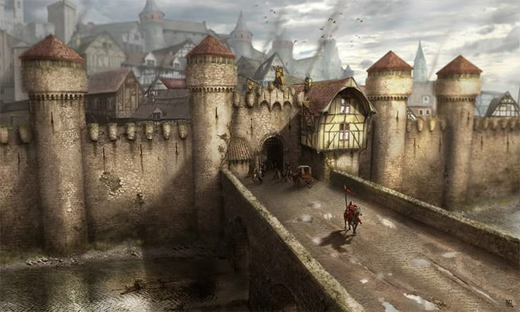
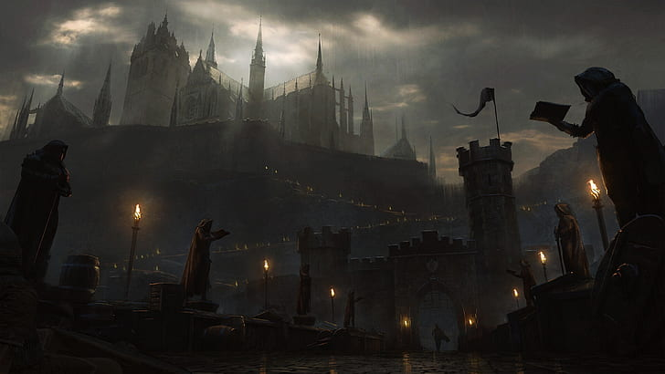
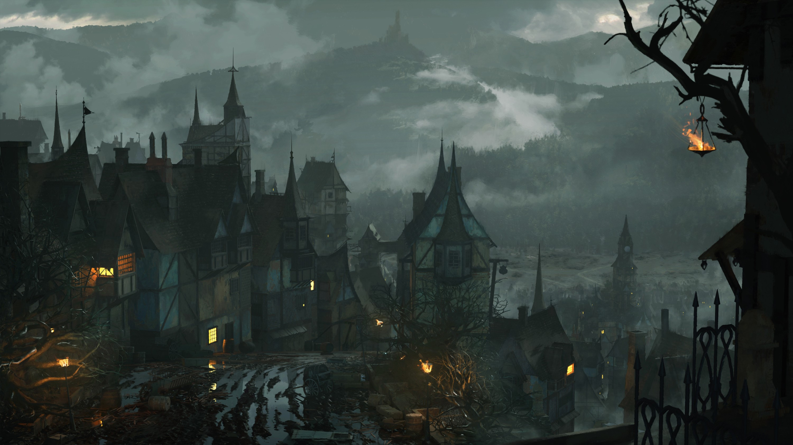

Garagor
Garagor, obří hlavní město obehnané
silnou vysokou zdí je domovem mnoha cechů, soudů a šlechtických sídel. Na jeho okraji je ghetto pro
nelidi,
kteří jsou v ostatních čtvrtích utlačováni a jejich pozemky vykupovány bohatými šlechtici, často za
podivných okolností.
V Garagoru je spousta čtvrtí, ale základní rozdělení, které ale často splývá je rozdělení na světové
strany.
Východní se říká Chudá, protože jsou zde nejstarší a nejrozbitější domy.
Západní se říká Chrámová, protože je zde spousta kostelů a chrámů zasvěcených různým bohům. Není
však tvořena jen jimi.
Severní se říká Šlechtická, protože zde má sídlo spoustu šlechtických rodů ať už z Varky, či jiných
zemí.
Dále pak i různé bohatější cechy, nebo movití měšťané.
Jižní je pak nazývána Pracovně-Obchodní. Zde se nachází velká Garagorská tržnice, většina bank a
cechů.
Celé město je pak protkáno sítí hospod a jiných zařízení, z nichž největší sdružení představují
Komory slečny Sisi.
Komory slečny Sisi najde člověk v celém Garagoru. Jsou to podniky zahrnující lázně, prádelny, či
butiky až po ty méně ctnostné,
kam se chodí až ve večerních hodinách zapomenout na starosti světa do náruče milých společníků, či
společnic.
Tedy před vnějškem...
Dobrodružství, která se zde odehrála:
- Doprovod karavany
- - doprovod zboží do Garagoru, potkání Narmera a Neery
- Průzkum rozbitých chodeb podzemí
- - průzkum podzemních komplexů, na který dostal Emer zakázku, pořádná první Zaklínačská práce!
- Hledání Neery
- - Neeru někdo unesl, vyšetřování kdo jí unesl, Perlíkův moment boje, setkání s GGG a Alocou

Garagor na mapě
Garagorská hradba

Severní "šlechtické" čtvrti Garagoru
Západní chrámová čtvrť Garagoru
Východní chudá čtvrť Garagoru